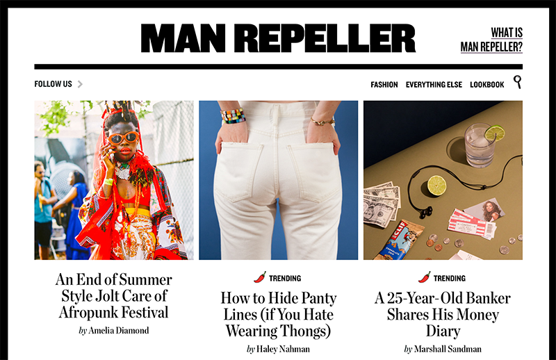
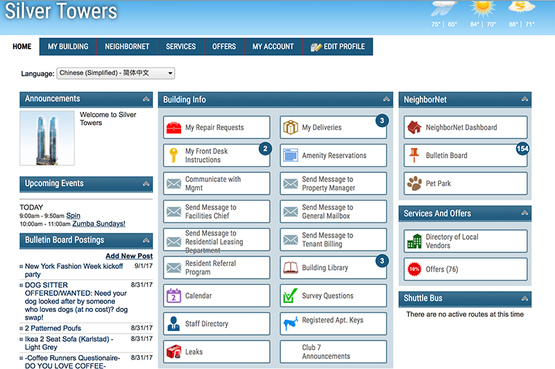

Website Comparison
A Successful Website: Man Repeller
Man Repeller is more than just a fashion website, it is an award-winning multi-media company with over a million followers. Created by Leandra Medine, Man Repeller started of as a personal fashion blog. Its content revolves around culture, humor, style, beauty, wellness, feminism, relationships and careers. It’s multi-use of colors and typefaces circle around the message that beauty comes in all shapes, sizes, and colors. While having great colors, typefaces, and font sizes that are multi-versatile, Man Repller is a great ‘platform for good writing, good thinking, and great clothing.’ Anastasiya Mozgovaya states “Man Repeller is another proof to the saying, ‘Never judge a book by its cover.’ Your first impression of Man Repeller is most probably wrong.” It connects to its bright and interesting users in a very successful way by updating its content on a daily basis. It brings women together by showing them that they are not alone when they are scared to be themselves.
I believe Man Repeller is a useful successful website, not only for its content, but for its usability and utility. It provides features that are easy, quick, aesthetically pleasing and recognizable. It is mobile friendly and efficient. When playing around with the screen size, the content moves smoothly and quickly, not distorting any images or words. It hovers over every image and title, never allowing you to get lost with your mouse. Clicking any story or title, within seconds I’m at its content. Man Repeller is designed in a way that any new users can easily learn and accomplish its basic tasks and for its regular users to never forget its features. Not only is it easy to learn, efficient, and proficient; its design is satisfying. Its main page greets you with the top 3 stories of the day, you scroll down and see the next trending stories. The images are high-definition and focused on its main topic. On the top right corner you have four different options, fashion, anything else, look book, and search.
The search is a little pictogram representing a magnifying glass, satisfying its visual users. Each option leads straight to its content quickly and each option keeps “Man Repeller” on top, which clicking on it takes you back to the homepage. On top of its efficiency and organization, the design is not only aesthetically pleasing to the user but it helps with usability. Each time you hover over fashion or look book, a different color and typeface appear, demonstrating that your mouse is over it. The typeface used on the website is clear and cohesive, easy to read and understand. Other than all the features, colors, hovers, content, and efficiency; I believe Man Repeller is a successful website because since the first day they started this website, they have taken customer feedback very seriously. Each comment is taken into serious consideration and worked on. It is a great website for users and employees, it allows the outside world to make a difference on the site and see their contribution within a few weeks.
A Less Successful Website: Silver Towers Residents
Silver Towers residents website is for its residences to know what is going around its building and environment. It lets you know if you have packages or what classes are going on inside the gym and if any events are going on. The site has many features that are rarely used. More than half of the options, I do not understand nor use. This is one of many reasons why I picked Silver Towers Residents website as my less successful website.
What makes a useful website is utility and usability. The website might be easily learned by new users but its features are not efficient. One of the buttons titles over ride the box and when hovering over it, it covers a part of the title as well.
Ontop of that issue, this website is not mobile friendly. When re-sizing the webiste, a few of its content gets lost. Its color scheme, typefaces, and pictograms let down the aesthetic of the building itself. The content is not daily updated and many buttons do not work. The speed of the website is mediocre at best and takes a while to load when switching from a section to the homepage. For a user to re-establish familiarity with the website, it is easy since the website is never updated. All features are in the same place as the last day you visted the site. Being able to move around the website easily is not a good thing, it's a bad thing because it does not matter if it is easy to maneauver when the features do not work nor are used. I believe this is a less successful website due to theme not being consistent with the theme of the actual building, not having fresh content, and the residences themselves barely using it. A successful website should stay consistent with its theme, daily update its content, and have features that are used and helpful to its users.